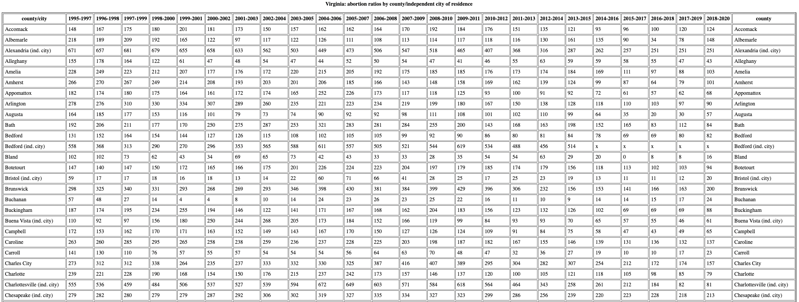

1 Impact of Medicaid Expansion on Abortion Rates
1.1 Introduction
The expansion of Medicaid reduced the cost of abortion and related care services, which may have increased the demand for abortion services. However, the expansion of Medicaid also increased access to contraception, which may have reduced the number of unwanted pregnancies and the demand for abortion services. Therefore, the impact of Medicaid expansion on abortion rates is ambiguous(Eliason, Daw, and Allen 2022). To investigate the impact of Medicaid expansion on abortion rates, we used a difference-in-differences approach to compare changes in abortion rates in states that expanded Medicaid to those that did not.
1.2 Data
1.2.1 Abortion Statistics

1.2.2 Medicaid Expansion
2 Impact of Telehealth Abortion on Abortion Rates
One in five abortion cases is through Telehealth. Telehealth abortion is a safe and effective way to access abortion services. Medication abortion accounted for 39% of all abortions in 2017. This number increased to 63% in 2020. Telehealth abortion has been shown to increase access to abortion services, reduce the abortion stigma.
To investigate the impact of telehealth abortion on abortion rates, we used a difference-in-differences approach to compare changes in abortion rates in states that expanded telehealth abortion to those that did not.
- “All telehealth abortions are counted according to the state the medications are mailed to.” This approach of defining and counting telehealth aborting is used by WeCount, an institution for studying abortion. In the state official report (all types of abortion), I found abortions are counted by the occurrence location of the abortion procedure or residence identity (in or out of state residents). I did not find very consistent rules for counting telehealth abortions.
Some milestones for telehealth abortion:
- In April 2020, the F.D.A. removed the in-person requirement for the duration of the pandemic, allowing pills to be mailed.
- On December 16th 2021, the new F.D.A. decision made the suspension permanent.
- On June 24, 2022, the US Supreme Court overturned Roe v. Wade.
The states that applied the abortion shield laws, which protect providers to prescribe abortion pills to states where abortion is banned:
California
Colorado
Connecticut
Massachusetts
New York
Vermont
Washington
Nevertheless, the data of county or facility-level abortion reports are very limited. Minnesota is one of the few states that provides month-level abortion data, but the identifier of providers is not provided. Thus, it is not possible to build a panel data set. Virginia provides annual county-level abortion reports but not monthly.